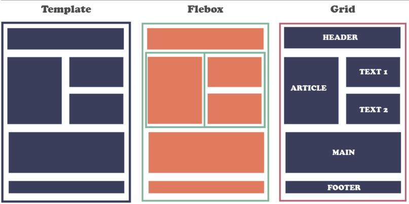

El proposito de este sitio es enseñar la definición de los conecpetos sobre los flex box, las listas y los enlaces que se crean o se configuran en una pagina web.
Flex Box
Flexbox es un módulo de diseño de CSS3 que se creó para mejorar la forma en la que se hace diseño responsive, evitando así el uso de float, escribiendo menos código y facilitando el posicionamiento de elementos, incluso no teniendo noción del tamaño de éstos. Básicamente la idea de Flexbox es poder alterar el ancho, alto y posicionamiento de elementos de la mejor manera con el espacio del que disponemos.
Cabrera, G. (2020, 05 de febrero). Flexbox - ¿Qué es y para qué sirve?. SOMOSPNT. https://somospnt.com/blog/148-flexbox-que-es-y-para-que-sirve

Listas y Enlaces
Las listas en HTML nos permite crear conjuntos de elementos en forma de lista dentro de una página, todos los cuales irán precedidos, generalmente, por un guión o número.
Los tipos de listas en HTML son los siguientes:
Listas ordenadas
Listas desordenadas
Listas de definiciones
Los enlaces hacen referencia vinculos que conectan una página Web con otra, ya sea dentro de la misma página web o entre diferentes páginas del mismo o distintos sitios web. los vínculos son un aspecto fundamental de la Web.
Básicamente podemos dividir los enlaces o links en 3 tipos:
Enlaces internos: son los que se dan entre páginas web del mismo dominio
Enlaces externos: son los que se dan entre páginas web de distinto dominio
Enlaces de posición:
- De un lugar a otro dentro de la misma página
- De un lugar a otro lugar concreto de distinta página del mismo dominio
- De un lugar a otro lugar concreto de una página de otro dominio
Plaza M, J. (2020, 05 de febrero). Flexbox - TIPOS DE ENLACE. 3con14.biz. https://3con14.biz/html/enlaces/13-tipos-de-enlaces.html